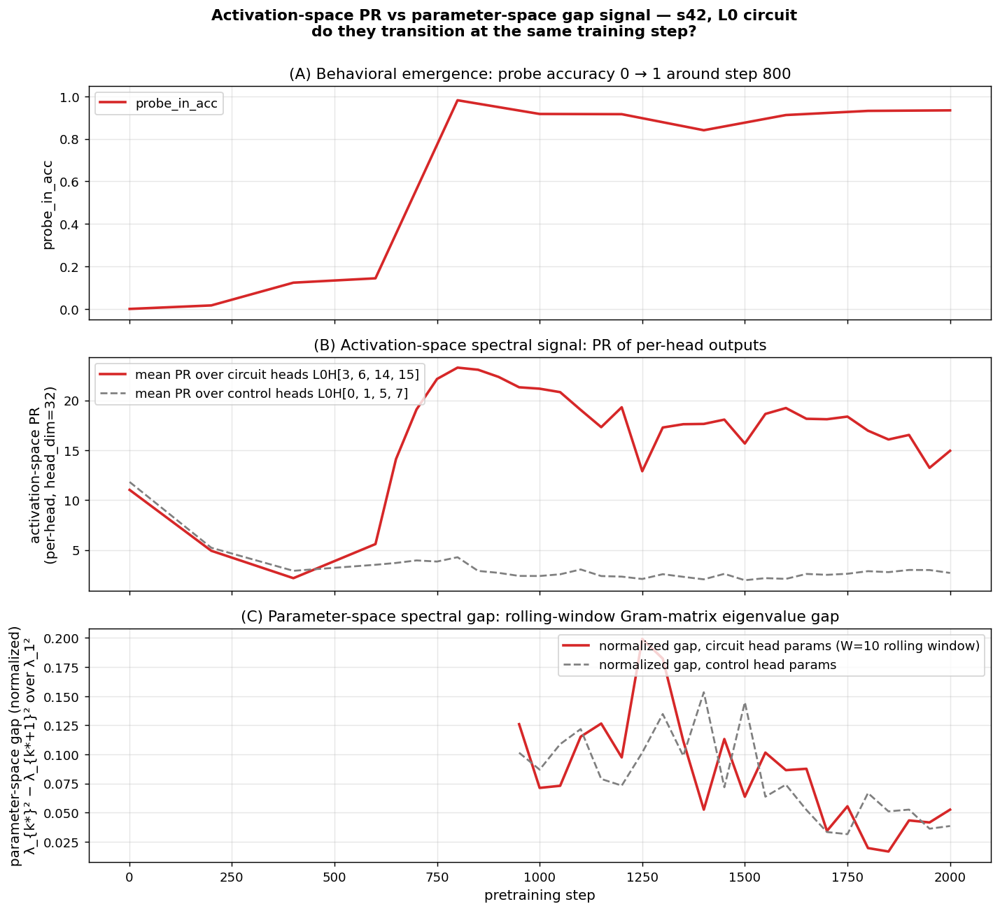
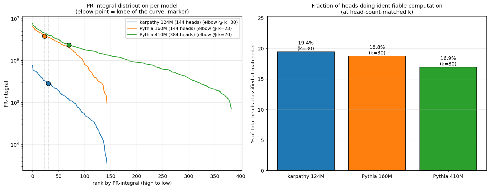
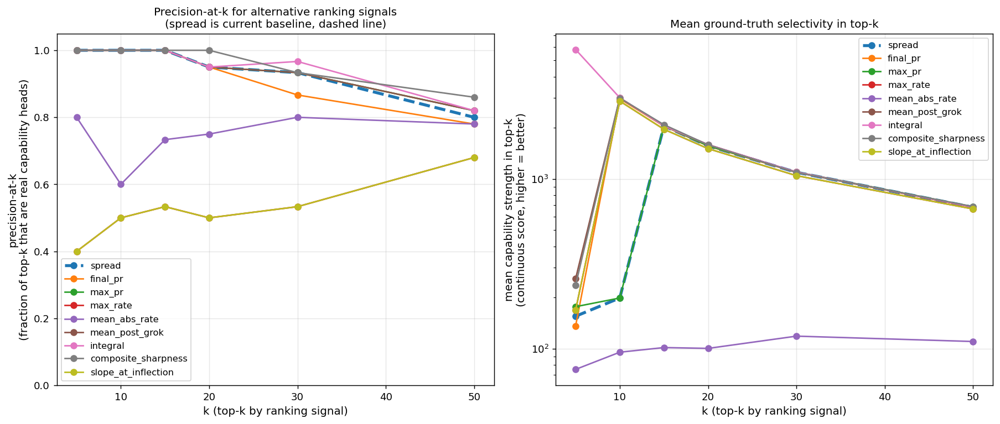

Why this matters
Mechanistic interpretability typically identifies attention circuits after they emerge, by ablating heads and inspecting attention patterns to see which were doing the work. That’s expensive (one full forward-and-eval pass per condition) and post-hoc (you need a fully-trained model and a target capability to define the ablation).
The signal in this paper is different: it’s read off per-head, per-checkpoint, during training, with no task-specific labels. A head that develops content-dependent attention during a capability-emergence event has its singular-value spectrum collapse from rank-1 (one default direction) to rank-k (one direction per content variation). That collapse is what we measure.
The interesting question is whether the signal is real and general — whether it reliably points at heads that ablation would confirm causally implicated, across different seeds, different scales, and different capabilities. The four results below address that.
The setup
We pretrain TS-51M (8 layers × 512 dim × 16 heads, ~51M parameters) on TinyStories with periodic injection of a long-range key-retrieval task. Each “probe example” has the structure
[prefix...] The secret code is XXXX. [...filler...] What is the secret code? XXXX
^ ^
KEY pos QUERY pos (target)where XXXX is a randomly-chosen single-token codeword from a fixed 512-codeword vocabulary. The model must use the early KEY mention to predict the codeword at the QUERY position. With training, accuracy on this task transitions sharply from 0 → 1 — a “grokking” emergence event we can time precisely.
The unsupervised method
For each pretraining checkpoint and each (layer, head) pair, we extract the per-head attention output at the QUERY-read position over a fixed batch of 2000 probe examples. The result is a [2000, head_dim=32] matrix per (layer, head, checkpoint). We compute its singular-value spectrum and report the participation ratio
$$\mathrm{PR} \;=\; \exp\!\big( H(\sigma^2 / \!\sum \sigma^2) \big)$$
a smooth, differentiable measure of effective rank.
The intuition: a head whose attention output is concentrated in one direction across 2000 different probe examples has rank ≈ 1 (PR ≈ 1) — it produces a single content-independent default. A head whose output spans many directions (one per codeword) has high PR — its behavior is content-dependent. With 512 codewords, content-saturated PR sits near 22.
Why should QK becoming content-dependent imply this PR signature? Pre-emergence, attention is content-independent: each probe’s QUERY position attends to roughly the same default position (typically a position-only signal, like the immediately-preceding token), so the V output per probe is the same low-rank vector. Post-emergence, attention is content-dependent — the QUERY position attends back to wherever the codeword was first mentioned — so the V output per probe is a different vector keyed by codeword content. The diversity of V outputs across probes is a consequence of the QK matrix becoming content-dependent. We measure this consequence with PR.
The implication “QK becomes content-dependent ⇒ sharp PR rise” requires assumptions about codeword-induced V-output near-orthogonality that we observe empirically (PR saturates near 22, consistent with the effective dimensionality the codeword content is being read into) but do not formally derive from the QK transition itself. Treat this as the operative mechanistic story; the empirical signature is what we measure, and the formal derivation is open work.
Spectral identification on six seeds
We apply the method to six seeds (s42, s271, s149, s256, s123, s314) trained at identical hyperparameters except the RNG seed. For each, the spectral signal points at a different small set of heads with sharp PR transitions during behavioral grokking:
| Seed | Spectral picks (PR-spread top set) | Where |
|---|---|---|
| s42 | L0H{3, 6, 14, 15} | L0 only — every other head has spread < 12 |
| s271 | L6H{1, 10} + L7H{9, 15} | late layers — no L0 head exceeds spread 11 |
| s149 | L6H{2, 5, 6, 7} + L7H{13} | late layers, different specific heads than s271 |
| s256 | L5H10 + L6H{2, 4} + L7H{6, 13} | spans L5/L6/L7, shares L6H2 + L7H13 with s149 |
| s123 | L5H5 + L6H{5, 11} + L7H{2, 4, 13} | spans L5/L6/L7, shares L6H5 + L7H13 with s149, L7H13 with s256 |
| s314 | L5H{7, 14, 15} + L7H{0, 5} | L5+L7 only (no L6 picks!), distinct from all others |
PR-spread values for the picks range from ~20 to ~24 (per head). For comparison, every non-pick head in every seed has spread ≤ ~14. The signal-to-noise gap is wide on the synthetic probe task.
The transition timing is also striking: PR minima fall at step 400 (when probe accuracy first becomes nonzero), peaks at steps 800–1000 (when probe accuracy reaches 0.5–0.92). The spectral signal precedes and tracks the behavioral emergence event.
Cross-seed sharing pattern at n=6:
- L7H13 is the most-recurrent late-layer head: appears in 3 of the 5 distributed seeds (s149, s256, s123). Closest thing to a “preferred” late-layer head, though still not universal (s271 and s314 don’t pick it).
- L6H2 in s149 ∩ s256
- L6H5 in s149 ∩ s123
- s271 and s314 stand alone — none of their picks shared with anyone
So at n=6 the picture is: each seed has a small set of strongly-transitioning heads, with partial cross-seed sharing that grows with sample size (n=2: no shared heads; n=4: 2 shared heads in one pair; n=6: shared heads in 3 pairs, with one head recurring across 3 seeds). The seed-to-seed variation is real but bounded — there’s some convergence on a small pool of “preferred” late-layer heads (especially L7H13), but plenty of seed-specific picks too.
This is the central methodological claim: the spectral signal identified a partially-different set of heads on each of six seeds without any task-specific labels — and as the next section shows, the heads it picked are exactly the heads ablation confirms causally responsible.
Causal verification
Zero out the spectrally-identified heads on a fully-trained checkpoint and measure probe accuracy. The cross-seed asymmetry is the load-bearing observation:
s42 ablations (step 4000, baseline pin 0.843):
| Condition | probe_in_acc |
|---|---|
| baseline | 0.843 |
| ablate s42 spectral picks: L0H{3, 6, 14, 15} | 0.151 ← circuit destroyed |
| ablate s271 spectral picks: L6H{1,10}+L7H{9,15} | 0.838 ← no effect |
| ablate s149 spectral picks: L6H{2,5,6,7}+L7H13 | 0.840 ← no effect |
| ablate s256 spectral picks: L5H10+L6H{2,4}+L7H{6,13} | 0.844 ← no effect |
| ablate matched-size L0 control: L0H{0, 1, 5, 7} | 0.831 |
| ablate ALL 32 heads in L6+L7 | 0.826 |
| ablate all 16 L0 heads | 0.129 |
s42 is L0-only: every late-layer ablation (s271, s149, s256 picks; even all 32 L6+L7 heads) leaves probe accuracy at baseline; only L0 ablations matter.
s271 ablations (step 2000, baseline pin 0.526):
| Condition | probe_in_acc |
|---|---|
| baseline | 0.526 |
| ablate s271 spectral picks (L6+L7) | 0.273 ← own circuit destroyed |
| ablate s42 spectral picks (L0H{3,6,14,15}) | 0.251 ← s42’s L0 picks ALSO matter |
| ablate s149 spectral picks: L6H{2,5,6,7}+L7H13 | 0.515 ← no effect (no shared heads) |
| ablate s256 spectral picks: L5H10+L6H{2,4}+L7H{6,13} | 0.525 ← no effect (no shared heads) |
| matched-size random L6+L7 control | 0.518 |
s149 ablations (step 4000, baseline pin 0.832):
| Condition | probe_in_acc |
|---|---|
| baseline | 0.832 |
| ablate s149 spectral picks (L6H{2,5,6,7} + L7H13) | 0.329 ← circuit destroyed |
| ablate s42 spectral picks (L0H{3, 6, 14, 15}) | 0.668 ← L0 substrate matters |
| ablate s271 spectral picks: L6H{1,10}+L7H{9,15} | 0.830 (no overlap) |
| ablate s256 spectral picks: L5H10+L6H{2,4}+L7H{6,13} | 0.698 ← shares L6H2+L7H13 |
| ablate s123 spectral picks: L5H5+L6H{5,11}+L7H{2,4,13} | 0.691 ← shares L6H5+L7H13 |
| ablate s314 spectral picks: L5H{7,14,15}+L7H{0,5} | 0.828 (no overlap) |
| ablate ALL 32 heads in L6+L7 | 0.150 |
s256 ablations (step 4000, baseline pin 0.827; step 10000, baseline pin 0.945):
| Condition | pin @ 4000 | pin @ 10000 |
|---|---|---|
| baseline | 0.827 | 0.945 |
| ablate s256 spectral picks (L5H10+L6H{2,4}+L7H{6,13}) | 0.335 ← destroyed | 0.812 |
| ablate s42 spectral picks (L0H{3,6,14,15}) | 0.829 | 0.605 ← L0 matters at saturation |
| ablate s149 picks (share L6H2 + L7H13) | 0.645 ← −0.18 | 0.922 |
| ablate s123 picks (share L7H13 only) | 0.779 ← −0.05 | n/a |
| ablate s271 picks (no overlap) | 0.832 | 0.947 |
| ablate s314 picks (no overlap) | 0.802 | n/a |
| ablate ALL 48 heads in L5+L6+L7 | 0.118 | 0.134 |
s123 ablations (full-trained to step 10000, baseline pin 0.998 at step 10K):
| Condition | pin @ 4000 | pin @ 10000 |
|---|---|---|
| baseline | 0.571 | 0.998 |
| ablate s123 spectral picks (L5H5+L6H{5,11}+L7H{2,4,13}) | 0.217 ← destroyed | 0.992 (saturated) |
| ablate s42 spectral picks (L0H{3,6,14,15}) | 0.621 ← NO EFFECT | 0.997 ← STILL NO EFFECT |
| ablate s149 picks (share L6H5+L7H13) | 0.571 | n/a |
| ablate s271 picks (no overlap) | 0.578 | n/a |
| ablate s256 picks (share L7H13 only) | 0.584 | n/a |
| ablate ALL 48 heads in L5+L6+L7 | 0.092 | 0.144 |
s314 ablations (step 4000, baseline pin 0.680; step 10000, baseline 0.889):
| Condition | pin @ 4000 | pin @ 10000 |
|---|---|---|
| baseline | 0.680 | 0.889 |
| ablate s314 spectral picks (L5H{7,14,15}+L7H{0,5}) | 0.367 ← destroyed | 0.862 (saturated) |
| ablate s42 spectral picks (L0H{3,6,14,15}) | 0.461 ← −0.22 | 0.666 ← −0.22 |
| All other cross-seed picks (no overlap) | ~baseline | ~baseline |
| ablate ALL 48 heads in L5+L6+L7 | 0.099 | 0.292 |
Five things to read off these tables (n=6):
- The spectral picks for each seed carry the circuit on that seed. Diagonal entries — own-seed picks ablation — produce the largest seed-specific drop in every case (s42: 0.84→0.15; s271: 0.53→0.27; s149: 0.83→0.33; s256: 0.83→0.34 at step 4000; s123: 0.57→0.22; s314: 0.68→0.37). Same-size random and matched controls have ~zero impact.
- L0H{3, 6, 14, 15} is a near-universal retrieval substrate, with one clean exception. Ablating that set causes a substantial drop on s42 (−0.69), s271 (−0.27), s149 (−0.16), s256 (−0.34 at step 10K), and s314 (−0.22). But on s123 it has zero effect, even at step 10000. A focused investigation showed that L0 itself is not dead on s123 — ablating all 16 L0 heads tanks pin (0.998 → 0.214) AND val_loss (1.44 → 3.70). L0 is doing essential general-LM work on every seed. The exception is in retrieval: 5 of 6 seeds additionally use L0H{3,6,14,15} as a retrieval substrate that the spectral signal flags as L0-localized on s42; s123 routes retrieval entirely through late layers (L5/L6/L7) without recruiting any specific L0 head as a retrieval team-member. So the falsified hypothesis is “L0 is the universal retrieval substrate”; the surviving claim is “L0 is the universal general-LM substrate, but most-seeds-but-not-all also use L0 specifically for retrieval.”
- Cross-seed sharing is real and proportional to overlap count. When two seeds share specific heads, ablating one’s picks on the other produces an effect proportional to the number of shared heads:
- s149 ↔ s256 share 2 heads (L6H2, L7H13) → effects of 0.13–0.18 each direction
- s149 ↔ s123 share 2 heads (L6H5, L7H13) → effects ~0.14 each direction
- s256 ↔ s123 share 1 head (L7H13) → effect 0.05 (smaller, as predicted)
- s271 ↔ anyone, s314 ↔ anyone: no shared heads → no cross-seed effect
- L7H13 is recruited independently by 3 of 6 seeds (s149, s256, s123). Whatever computation L7H13 implements on this task, it’s evidently the kind of computation that can be re-discovered across different random initializations more often than chance — though far from universal (s271 and s314 don’t pick it, and s42 doesn’t even use late-layer heads).
- Spectral identification is partial-but-aligned. The signal correctly picks heads that are causally implicated, on every seed. What it does not always do is pick the complete causal circuit when one component (L0) is shared and another (late layers) varies — so spectral picks are a sufficient identification of the seed-specific circuit but not a complete identification of the full computation. (For s123, where L0 doesn’t matter, the spectral picks ARE the complete circuit.)
The picture at n=6: most seeds use L0 substrate + seed-specific late-layer team (with partial sharing of specific heads, especially L7H13). One seed (s42) uses only L0; one seed (s123) uses only late layers, no L0. So both ends of the L0/late-layer spectrum exist in the seed distribution.
Mechanistic confirmation
What do the four L0 heads actually do? Measure each L0 head’s attention from the QUERY-read position back to the KEY position (averaged over 200 probe examples):
| Head | attention → KEY | selectivity (KEY vs uniform-other) |
|---|---|---|
| L0H3 | 0.146 | 44× |
| L0H6 | 0.139 | 42× |
| L0H14 | 0.228 | 76× |
| L0H15 | 0.268 | 95× |
| (every other L0 head) | < 0.07 | < 17× |
The four circuit heads are induction-style retrieval heads: at the query position, they attend back through the context to find where the codeword was first mentioned. The retrieved content (the codeword embedding via the V projection) gets written into the residual stream and flows through downstream layers to the output prediction.
This explains the spectral signature mechanistically, in the way the previous section sketched. Pre-emergence the heads attend to a single default position regardless of probe content (V output near-rank-1, PR ≈ 2). Post-emergence the QK has become content-dependent, attention follows the codeword, and the V output diversifies across probes (PR ≈ 22).
The late-layer picks are also KEY-attending heads — directly measured. Running the same query→KEY attention measurement for each seed’s spectral picks (at ckpt step 4000):
| Seed | Spectral picks | mean selectivity | max selectivity |
|---|---|---|---|
| s42 | L0H{3,6,14,15} | 64× | L0H15 = 95× |
| s271 | L6H{1,10}+L7H{9,15} | 138× | L7H15 = 190× |
| s149 | L6H{2,5,6,7}+L7H13 | 262× | L6H5 = 333× |
| s256 | L5H10+L6H{2,4}+L7H{6,13} | 161× | L7H13 = 276× |
| s123 | L5H5+L6H{5,11}+L7H{2,4,13} | 125× | L7H2 = 256× |
| s314 | L5H{7,14,15}+L7H{0,5} | 128× | L7H5 = 140× |
All 24 spectral picks across 6 seeds are confirmed KEY-attending. Notably the late-layer picks have higher selectivity than s42’s L0 picks — induction-style retrieval at higher layers is sharper, perhaps because the residual stream there carries cleaner content-tagged information.
Side observation: in each distributed seed, the spectral signal picks 4–5 heads but the model has ~10–12 KEY-attending heads in the active layers. The signal preferentially flags the sharpest-transitioning subset of the KEY-attending pool. Heads with high KEY-attention but lower PR transition spread are not flagged — consistent with the “ablate full L6+L7” results, which tank probe accuracy more than ablating just the spectral picks. So the spectral picks are a high-precision (all are real induction heads) but moderate-recall identification of the broader retrieval circuit.
So the cross-seed observation is same task, same mechanism (KEY-attending retrieval), different layer placement and different specific heads at each placement.
How this connects to the spectral-edge program
This piece doesn’t stand alone — it’s the empirical-interpretability counterpart to a longer program studying what kind of structure the spectral signal in transformer training actually picks up. That program’s earlier results argued that spectral gap dynamics in the rolling-window parameter Gram matrix precede grokking events under weight decay (and don’t, without it), and — separately — that standard sparse-autoencoder attribution methods do not preferentially identify directions in the spectral-edge subspace. Together those left an open question: if SAE attribution is missing this structure, is what it’s missing mechanistically real, or is it just an optimization-geometry artifact that doesn’t correspond to anything circuit-shaped?
This piece answers half of that. The same kind of spectral signal — applied per-head, per-checkpoint, on activation rather than parameter space — pre-identifies the causally-relevant heads of a specific behavioral capability on independent seeds where the heads themselves differ. Together the two pieces form a coherent two-step claim: spectral structure carries information SAE attribution misses, and what it carries is mechanistically real circuits, not optimization artifact, not noise. The methodological piece (a per-head spectral monitor) plus the substantive piece (the heads it identifies are the heads ablation confirms causally) is a stronger argument together than either in isolation.
Direct cross-check on s42 (head-restricted parameter Gram). We tested the connection more directly: at each checkpoint up to step 2000, extract the L0 Q/K/V parameter rows for the circuit heads {3, 6, 14, 15} and the matched-control heads {0, 1, 5, 7}, build a rolling-window (W=10) Gram of consecutive deltas, and compute its signal-weighted spectral gap. Both surfaces show the circuit-vs-control contrast: at step 1250 the activation-space PR ratio is 6.2× (circuit / control), the parameter-space gap ratio is 1.96×; the same direction is sustained throughout step 950–1750. The contrast is much sharper in activation space (~7×) than parameter space (~1.6×), but qualitatively both signals point at the same heads.

We do not see clean temporal precedence in this analysis (the activation transition completes by step 800; our checkpoint cadence is too sparse before that to get a window-10 gap signal in the same window — first parameter-space data is at step 950). So this is a “consistent with” result, not a strong claim of “two surfaces of one underlying signal.” The full claim would need denser early checkpoints and a full-model Gram (rather than head-restricted), which is a natural follow-up.
Cross-scale validation: GPT-2 124M, Pythia 160M, Pythia 410M
We tested whether the spectral signal generalizes from the synthetic probe task to natural-text capabilities, and whether it’s portable across (data, training procedure, RNG, codebase, scale). Three independently-trained natural-text models were used: Karpathy 124M (12L × 768d × 12h) trained on FineWeb-10B; EleutherAI Pythia 160M (12L × 768d × 12h) and Pythia 410M (24L × 1024d × 16h) trained on the Pile. No probe injection. For each pick, we ran a 6-class capability survey (induction, previous-token, duplicate-token, first-token / BOS, self, local) and classified each pick by its highest-selectivity class against the uniform-other baseline.

Precision-at-k across all three models:
| k | Karpathy 124M (FineWeb) | Pythia 160M (Pile) | Pythia 410M (Pile) |
|---|---|---|---|
| 5 | 100% | 100% | 100% |
| 10 | 100% | 100% | 100% |
| 15 | 100% | 93% | 93% |
| 30 | 93% | 93% | 90% |
| 50 | — | — | 90% |
| 80 | — | — | 81% |
Match within 1–3 percentage points across an 8× parameter scale range and two completely different training pipelines. The methodology generalizes.
The conserved fraction (the headline finding)
When we extend Pythia 410M’s classification to top-80 (head-count-matched to top-30 on the 144-head models) and look at fraction of heads classified into a known capability class:
| Model | Total heads | k (matched) | Classified | Fraction |
|---|---|---|---|---|
| Karpathy 124M | 144 | 30 | 28 | 19.4% |
| Pythia 160M | 144 | 30 | 27 | 18.8% |
| Pythia 410M | 384 | 80 | 65 | 16.9% |
~17–19% of heads in a model do identifiable specialized computation, conserved across an 8× scale range. The capability count scales with model size; the fraction of heads doing specialized work stays constant. The PR-integral distribution has a natural elbow at the same fraction in every model — a model-agnostic cutoff for “heads worth investigating,” no manual k selection needed.

Cross-model invariant: every model has one super-prev-token head
| Model | head | prev-token selectivity |
|---|---|---|
| Karpathy 124M | L6H9 | 27,776× |
| Pythia 160M | L3H2 | 81,792× |
| Pythia 410M | L5H2 | 23,634× |
Different layer in each model, but the PR-integral ranking finds it across all three. PR-spread misses all three — their trajectories are high-but-not-the-highest-spread. The recurrence suggests a real architectural regularity: there’s probably one degree of freedom per model that gets compressed into a single near-perfect prev-token implementation, and the methodology is sensitive enough to find it without knowing where to look.
Causal verification: distribution wins at scale
Ablation-based causal verification was run on each model. The targeting itself differs by scale:
| Model | Targeting | top-1 drop |
|---|---|---|
| Karpathy 124M | top-6 spectral picks (incl 3 induction heads) | 16% → 0.85% (−95%) |
| Pythia 160M | mech-interp-classified L8H2 + L5H0 | 4.7% → 0.05% (−99%) |
| Pythia 410M | top-6 spectral picks (mostly self/prev) | 3.7% → 2.1% (−43%) |
| Pythia 410M | mech-interp + 2nd-class induction | 3.7% → 0.85% (−77%) |
| Pythia 410M | all heads with induction selectivity ≥ 50× (11 heads) | 3.7% → 0.0% (−100%) |
On 124M, top-6 spectral picks happened to contain 3 induction heads, so spectral-picks ablation alone tanked induction. On Pythia 160M and 410M, top-6 picks are dominated by self/prev-token heads — and the mech-interp triangulation in step 2 of the workflow becomes load-bearing. Screening all 384 heads of Pythia 410M for induction selectivity ≥50× found 11 such heads — more than Karpathy 124M’s 6 — but at lower per-head selectivity (max 203× vs 124M’s 681×). Only 3 of the 11 were in the top-30 spectral picks.
The pattern: distribution wins, not dilution. Total induction “signal” is preserved across scale, just spread across more heads. The methodology fully captures the circuit when ablation targets the full capability-selective set (not just the spectral top-k).
Full details and methodological recommendations in INDUCTION_HEADS.md.
What this is and what it isn’t
It is a complete chain of evidence — spectral identification → causal ablation → mechanistic interpretation → cross-seed comparison — for an attention circuit that implements a specific behavioral capability, plus a methodological tool that survives a non-trivial robustness test (the heads change between seeds; the signal still finds them).
It is not yet:
- A V-circuit decomposition. We’ve shown the heads attend to KEY; we haven’t quantified how the V projection encodes codeword identity, or how downstream MLP layers consume the retrieved signal.
- A statistically-characterized account of seed-to-seed variability. With N=6 seeds the structural picture has more nuance than N=4 suggested. Three patterns coexist in the seed distribution: (a) L0-substrate-only (s42, OOD 0.33), (b) L0 retrieval substrate + late-layer team (s271, s149, s256, s314 — OOD 0.66, 0.95, 0.68, 0.68), (c) late-layer retrieval only, no L0 retrieval (s123, OOD 0.50). All seeds use L0 for general-LM work (full-L0 ablation destroys val_loss on every seed); the variation is in which specific heads carry the retrieval substrate — 5 of 6 seeds use L0H{3,6,14,15} for that, s123 doesn’t. Cross-seed sharing of specific late-layer heads is real and proportional to overlap count (verified at n=6: s149↔s256, s149↔s123, s256↔s123 all show dose-dependent effects). The OOD-vs-circuit-pattern relationship at n=6 is messier than n=4 made it look: distributed-with-L0 seeds (n=4) span OOD 0.66–0.95, late-only seed (n=1) is at 0.50, L0-only seed (n=1) at 0.33. The mid range overlaps. Treat the “wider circuit ↔ better OOD” framing as a hypothesis the n=6 data are weakly consistent with, not a finding. Definitive conclusions need 8–12 seeds.
- A test on non-pattern capabilities. The capability classes confirmed so far — induction, previous-token, self-attention, first-token — are all positional/content-routing patterns expressible as “attend to position X based on content Y.” Whether the same per-head PR signal works for capabilities where the head’s computation is more about V-projection structure than QK-pattern identity — numerical reasoning, syntax tracking, anaphora — is open. The mechanism predicts the signal still surfaces content-dependent heads, but per-class precision may shift.
Reproducibility
Code is at github.com/skydancerosel/spectral-probe-circuits.
Key artifacts:
probe_circuit_per_head.py— per-head spectral analysisprobe_circuit_ablation_multi.py— causal ablationprobe_circuit_mechinterp.py— attention-pattern measurementprobe_circuit_headline_figure.py— headline composite
Pretraining configs:
- s42:
runs/beta2_ablation/pilot_wd0.5_lr0.001_lp2.0_b20.95_s42 - s271:
runs/beta2_ablation/pilot_wd0.5_lr0.001_lp2.0_b20.95_s271 - s149:
runs/beta2_ablation/pilot_wd0.5_lr0.001_lp2.0_b20.95_s149 - s256:
runs/beta2_ablation/pilot_wd0.5_lr0.001_lp2.0_b20.95_s256
Open questions
- What predicts the cross-seed asymmetry? Three structural classes coexist in the seed distribution at n=6: L0-only (s42), L0+late (s271, s149, s256, s314), and late-only (s123). What controls which class a seed lands in? We tested whether per-head initial QK features predict which heads will become spectral picks. Result: directional but inconclusive — in 5 of 8 (seed, layer) cells the picks had higher initial top-SV or top-1/top-2 gap (z = +0.6 to +1.7), in 2 cells the direction reversed. Suggestive of a “lottery ticket” interpretation but noisy at n=6 seeds × 16 heads/layer. A clean test would need a larger model and/or more seeds.

The s123 case (late-only, no L0 dependence even after full training) is especially interesting — what’s different about its initialization that makes it not recruit the L0 substrate that 5 of 6 seeds end up using? L7H13’s recurrence across 3 of 6 seeds raises a similar question in the other direction: what makes that specific head re-discoverable.
Better ranking signal than PR-spread.Resolved. The integral of the (PR − 1) trajectory outperforms PR-spread for ranking heads by capability strength on natural-text 124M. Same precision at top-15 (both 100%), but integral better at top-30 (0.97 vs 0.93) and dramatically better in mean selectivity at the very top (top-5 by integral = 5,791× mean selectivity vs 155× for spread). Recovery of L6H9 (27,776× prev-token, missed by spread at rank 14) is the headline difference. Integral is also essential on Pythia, where L0 heads start at PR ≈ 60 (random attention at init produces high effective rank) and collapse to PR ≈ 2–30 by training end — PR-spread flags them as top picks; PR-integral correctly demotes them.
- Can spectral monitoring be used as an intervention during training? The current signal is read off offline. Making it a training-time callback that fires when a circuit is forming would let it act on its own observations: allocate compute, freeze certain weights for analysis, scale gradients on detected heads. Practical artifact for live interp research.
- Does the 17–19% conserved fraction hold at much larger scale? Confirmed across 124M / 160M / 410M (an 8× range). At 1B+ the question becomes whether the conserved fraction continues, whether new capability classes emerge that the 6-class survey doesn’t cover, and whether the “one super-prev-token head per model” invariant continues to hold. And on the data axis: the BOS / first-token class is much larger on Pythia (Pile) than Karpathy (FineWeb); is that data-dependent, scale-dependent, or both?
What this means
The methodological tool is small (a participation ratio, computed per head, per checkpoint), the implementation is short (~100 lines), and the cost is negligible compared to the training run itself. The findings argue that this small tool reliably points at causally-relevant attention heads across:
- Different random seeds (six seeds — same task, different specific heads, same signal works on all)
- Different model sizes (51M, 124M, 160M, 410M tested — an 8× parameter range)
- Different data distributions (synthetic probe injection, FineWeb, the Pile)
- Different training pipelines and codebases (Karpathy llm.c, EleutherAI Pythia)
- Different capability classes (induction, previous-token, self-attention, first-token; with mech-interp triangulation)
The headline use-case is what the title suggests: a fingerprinting tool for attention circuits that runs alongside training and pre-identifies the heads worth investigating, without committing the model author to specific ablations or capability-target choices in advance. For interp researchers studying capability emergence in long pretraining runs, the existing alternative is to do the post-hoc ablation pass for every checkpoint of interest. This is faster, model-agnostic, and reveals an invariant the existing methodology can’t see — the conserved ~17–19% specialization fraction across scale.
The longer-term claim — connecting this to the parent spectral-edge program — is that the same kind of structure that controls phase transitions in parameter dynamics also identifies the circuits implementing the resulting behaviors. The two surfaces (parameter space, activation space) appear to be windows on the same underlying signal. The direct cross-check above gives the partial confirmation; full validation needs denser early checkpoints.